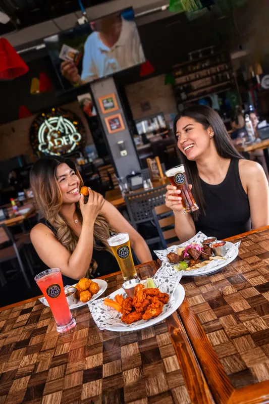
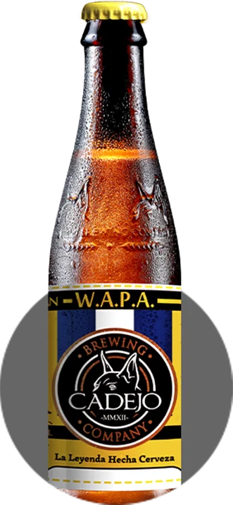
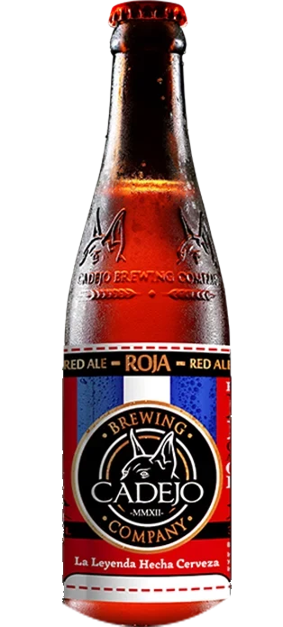
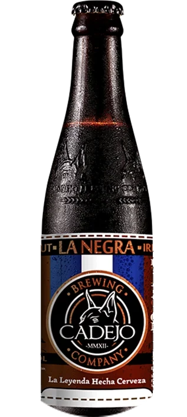
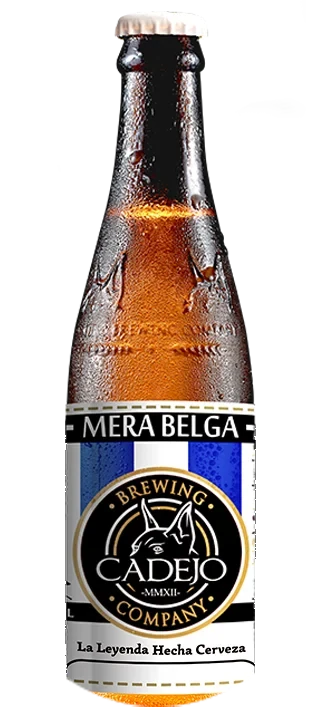
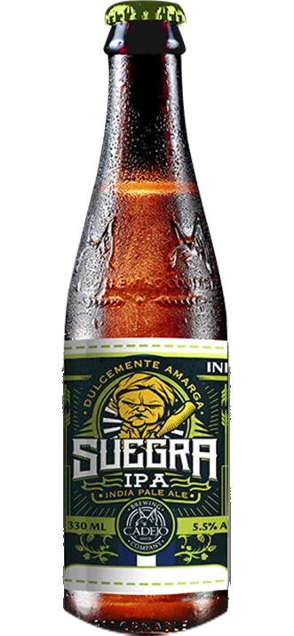
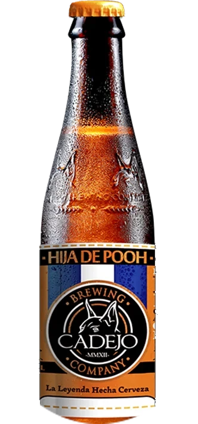
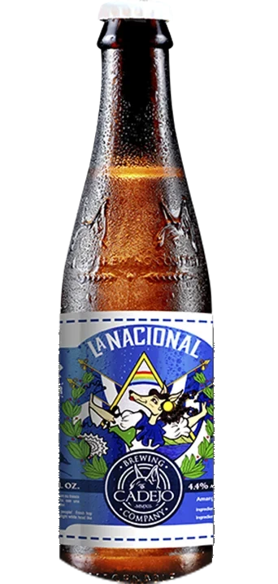

Cadejo Playa
El Sunzal, Surf City, km 45.5
On the cliffs of El Sunzal, with a saltwater pool fed by the ocean and a freshwater pool. Stay the night: rooms from $125.
The experience you're looking for is at Cadejo
Cadejo started as El Salvador's first craft brewery. Today each location is built for a different moment, so you pick the plan and we have the place.
Three quick questions and we'll show you the three Cadejos that fit best, with directions.
Every Cadejo serves food, our craft beer and non-alcoholic drinks, and families are welcome at all of them.
Worth the drive. Plan a day around them.
El Sunzal, Surf City, km 45.5
On the cliffs of El Sunzal, with a saltwater pool fed by the ocean and a freshwater pool. Stay the night: rooms from $125.

Santa Tecla
Our destination restaurant in La Mansión de las Colinas, a restored historic mansion. A must-see when you visit El Salvador, with weekend breakfast from 7 a.m.

Calle a Huizúcar, Nuevo Cuscatlán
Our only steakhouse: meats over charcoal and wood, with views of the volcanoes and lakes, 5 minutes from the city.

The brewery, San Benito, San Salvador
Where Cadejo is brewed. Eat next to the tanks, try every style on tap and join the brewery tour every Thursday at 7 p.m.

In front of Gates 2 and 9, daily from 5 a.m.
Two restaurants inside El Salvador International Airport, with breakfast, lunch, dinner and your last Salvadoran craft beer before you fly.
Good food, our beer on tap and something going on most nights.

Plaza Jabes, across from PriceSmart
Bring your pack: the big match on our most screens, chess, board games and trivia, with a view of the San Salvador volcano.

Paseo Venecia, Soyapango
A big terrace for families and friends. Weekend breakfast from 7 a.m., karaoke and tribute nights, with our craft beers and sodas.

Pasares, San Juan Opico
Something different in the area: karaoke, live music and the match with our craft beers and sodas, open seven days a week.

Zona Viva, Zona 10, Guatemala City
The craft beer spot in the heart of Zona Viva. An open-air garden and terraces, a relaxed vibe, and your dog is welcome.
Every Cadejo has its own kitchen and its own menu, from seafood by the ocean to weekend breakfasts in the mountains.


Each location has its own menu. See the menus by location
Cadejo is the largest craft brewery in Central America, and it all started in 2012 as El Salvador's first. Every beer is brewed at our brewery in Zona Rosa. Scroll through the house beers, then ask what's on tap this season.

Wheat American Pale Ale
Mátalas callando. Blond on the outside, with an intense citrus bitterness that wins over experienced palates.

Red Ale
Red, sweet and spiced, with a bitterness that makes you sweat your fangs.

Irish Stout
Creamy and dark, with notes of coffee and chocolate.

Belgian White Ale
Belgian yeast with orange and spices. Soft and fruity.

India Pale Ale
Strong, sweet and bitter. Sweetly bitter, like the name says.

Honey Blonde Ale
Brewed with natural honey.

Craft Lager
Fresh, with hop aroma, solid malt and a white head.
Our forefathers claim the gods created two creatures to protect the people. One, white like foam, guards the light and protects those who do good. The other, black like coal, prowls the shadows and scares lost souls back onto the right path. Two guardians, the duality we all carry inside.
Read the legend and our storyBirthdays, baby showers, graduations, weddings and company events. Book a private room at selected locations, or bring the Cadejo bar and a Cadejo Sommelier to your venue.
Plan your event on WhatsApp
Both. Cadejo started in 2012 as El Salvador's first craft brewery and today it is the largest craft brewery in Central America. Every location is also a restaurant with its own kitchen, from a beach restaurant in El Sunzal to a steakhouse with a view and a historic mansion in Santa Tecla.
Yes, full meals at every location. You will find seafood at Cadejo Playa, meats cooked over charcoal and wood at our steakhouse Cadejo Montaña, burgers, bowls, pastas, tacos, salads and desserts, plus breakfast, a kids menu and a vegetarian menu at Cadejo Mansión. Each location has its own menu.
Yes. Every Cadejo is family friendly and kids are welcome. Families love Montaña, Mansión and Playa for weekend breakfast and long lunches, and Soyapango for breakfast and celebrations.
Start with Cadejo Mansión in Santa Tecla, a restored historic mansion and a must-see. Going to Surf City? Cadejo Playa in El Sunzal has pools on the cliffs and rooms facing the beach. Love beer? Visit our brewery in Zona Rosa, San Salvador, for the Thursday tour. And before you fly out, we have two restaurants at the airport.
On Saturdays and Sundays, Cadejo Mansión, Cadejo Montaña and Cadejo Soyapango open at 7 a.m. and Cadejo Playa at 9 a.m. Our two airport restaurants serve breakfast every day from 5 a.m.
Yes. All our beer is brewed at our own brewery in Zona Rosa, San Salvador. Cadejo is the largest craft brewery in Central America, with house beers like WAPA, Roja, La Negra, Merabelga, Suegra, Hija de Pooh and La Nacional, plus seasonal releases.
Yes. There is a brewery tour every Thursday at 7 p.m. at Cadejo Zona Rosa, Calle La Reforma #222, San Benito, San Salvador.
To use the seawater and freshwater pools there is a $25 minimum per person, and all of it goes toward your food and drinks. Coming just to eat? No minimum. You can also stay the night: rooms start at $125.
Cadejo Santa Elena has the most screens, plus game nights, trivia and chess. Zona Rosa, Soyapango and Opico also show the big matches.
Yes. We host birthdays, weddings, company parties, engagements, baby showers and more. Cadejo Mansión and Cadejo Montaña are our favorites for big events, and we can also bring the Cadejo bar and a Cadejo Sommelier to your own venue.
Yes, at Cadejo Montaña and Cadejo Guatemala. At Montaña your dog gets a water bowl and treats, and in Guatemala you have an open-air garden and terraces. Many families also come to Cadejo Mansión with their dogs.
Yes. Restaurants, bars and stores can offer Cadejo craft beer. Write to our sales team on WhatsApp and they will help you.
Want Cadejo beer at your business?Restaurants, bars and stores: talk to our sales team.